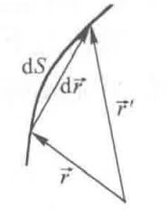

几何光学始终以光线为研究对象，因而也称为光线光学或射线光学.
为了建立能够描述光线行为的方程，一个自然的思路是从光线的定义出发，依据光线处处与光波的等相位面正交的特点来寻求光线方程，以解决我们关心的光传播路径问题.
由程函方程可知，等相位面就是程函数\(\psi\)的等值面，因而梯度矢量\(\nabla\psi\)必然指向等相位面的法线方向.
[设]法线方向单位矢量为\(\boldsymbol{S}_0\).
$$\therefore \nabla\psi = n\boldsymbol{S}_0$$如图所示，对于任一空间曲线，若以\(\mathrm{d}S\)表示线段微分，以\(\mathrm{d}\boldsymbol{r}\)表示位置矢量微分，则导数\(\mathrm{d}\boldsymbol{r}/\mathrm{d}S\)表示该曲线某点切向方向的单位矢量.

光线是一条与等相位面正交的特殊曲线，必然要求其切线方向与等相位面法线方向一致，即：
$$\frac{\mathrm{d}\boldsymbol{r}}{\mathrm{d}S} = \boldsymbol{S}_0$$ $$\therefore \nabla\psi = n\frac{\mathrm{d}\boldsymbol{r}}{\mathrm{d}S}$$光线方程式研究介质中光的几何传播特性的重要方程，它将光线轨迹（由\(\boldsymbol{r}\)描述）与空间折射率分布\(n(\boldsymbol{r})\)联系起来，由光线方程可以直接求出光线轨迹表达式.
由光线方程，可以证明下式成立：
$$\frac{1}{R} = \frac{1}{n(r)}N\cdot\nabla n$$上式的物理意义为：光线总向折射率高的区域弯曲.